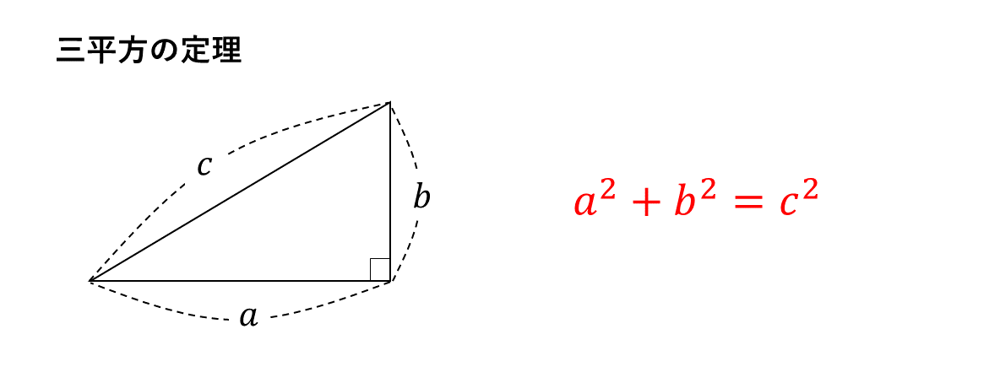
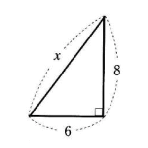
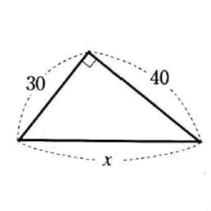
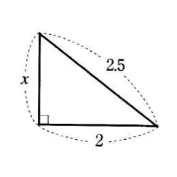

三平方の定理は、２辺の長さをa, b, 斜辺の長さをcとする直角三角形において成り立つ定理です。
辺a, bをそれぞれ２乗した数の和は、斜辺cの２乗に等しくなります。
直角三角形では、２つの辺の長さが分かると、三平方の定理を使って他の１辺の長さが計算できることを覚えておきましょう。
また、三平方の定理の逆も成り立ちます。
３辺の長さがa, b, cの△ABCにおいて、a²+b²=c²が成り立つならば、△ABCは直角三角形であるということもいえます。
これに加え、三平方の定理の問題では最も重要なポイントがあります。
２つの三角定規の直角三角形の比と角度をパッと答えられるようにしておくことです。
30°, 60°, 90°の直角三角形の比は1:2:√3で、45°, 45°, 90°の直角三角形の比は1:1:√2となります。
逆も成り立ち、三角形の比が1:2:√3ならば30°, 60°, 90°の直角三角形、1:2:√3ならば45°, 45°, 90°の直角三角形となるのです。
このポイントは、ただ知っているだけでは約に立ちません。
高校受験の図形問題では、この２つの三角定規のパターンが、円や長方形の中に巧妙に隠された形で登場するのです。
図形の問題では、30°や45°, 60°という角度が出たら「もしかして三角定規のパターン!?」と常に意識しておくことをおすすめします。
(1)
(2)
(3)
